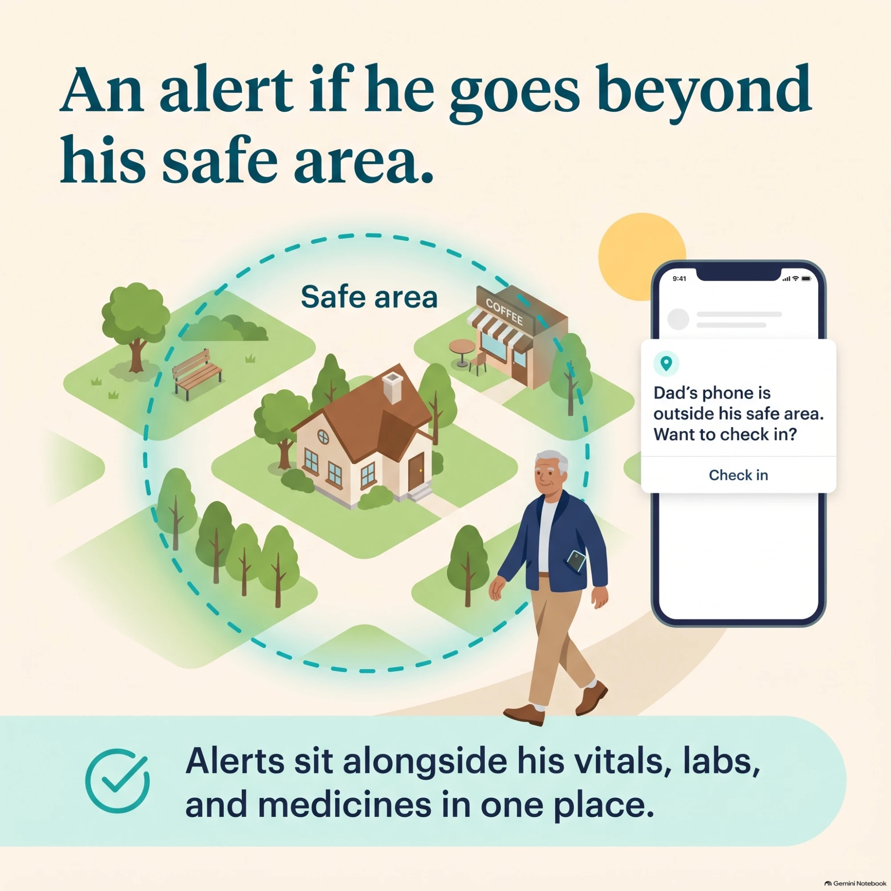
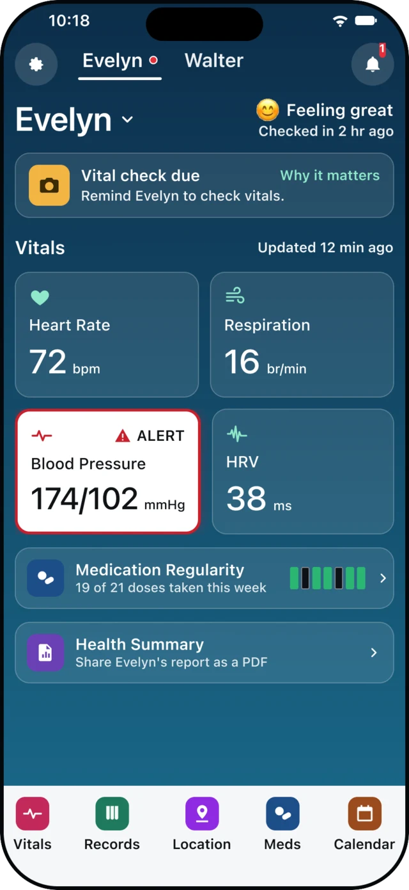
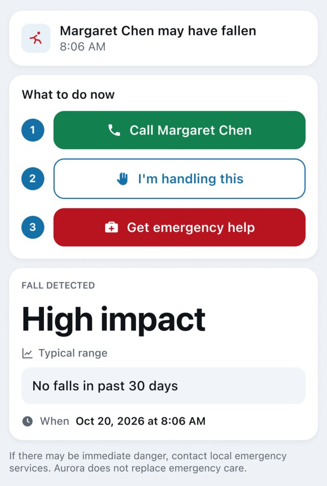
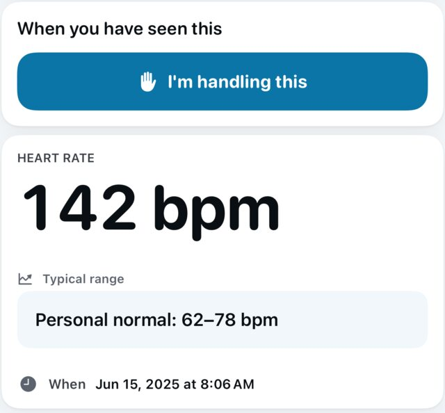
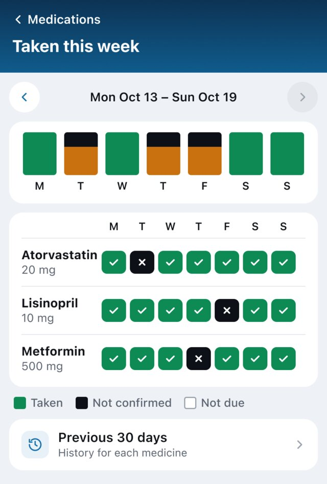
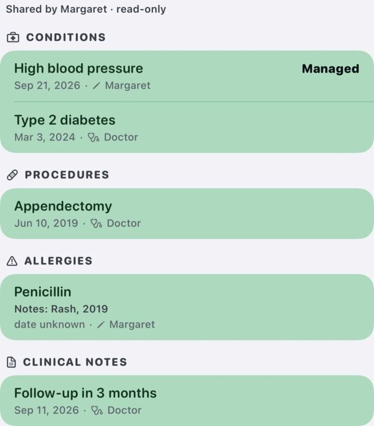
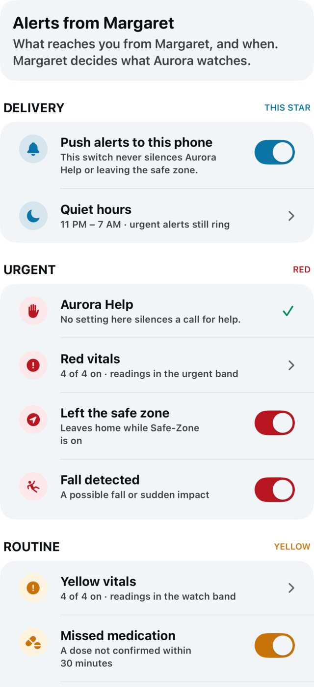

◷
Daily view
Vitals, trends, meds, labs, and visits in one care rhythm.
For Angels
Angels can observe changes, receive alerts, and help the Star take the right next step.
Vitals, trends, meds, labs, and visits in one care rhythm.
Examples: abnormal vitals, fall detected, safe-zone breach, and voice-triggered help.
Examples: BP rising, weight trending up, changing vitals, medication misses.
See medication misses and patterns that need follow-up.
Know when a parent wanders outside a trusted area.
Propose medication, doctor, or lab follow-up steps.

Safe area
The Star sets the area. If he leaves it, you get an alert, and you can check in right away.
See it in the app
Real screens from a family member's phone.

Vitals, check-ins, and alerts for the Star you care for.

Call the Star, say you're handling it, or get help.

An out-of-range reading shown next to the Star's personal normal.

See which doses were taken or not confirmed this week.

Conditions, procedures, allergies, and notes the Star chose to share.

Which alerts reach you, and when, including quiet hours.
Screens from the Aurora Care app, shown with sample data.
Catch drift before it becomes urgent.
Angels are notified when help is needed.
Aurora Care supports both: watch drift early and alert quickly when the moment needs action.
Aurora Care supports earlier awareness and follow-up. It does not replace clinicians, emergency services, or medical diagnosis.